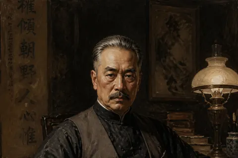
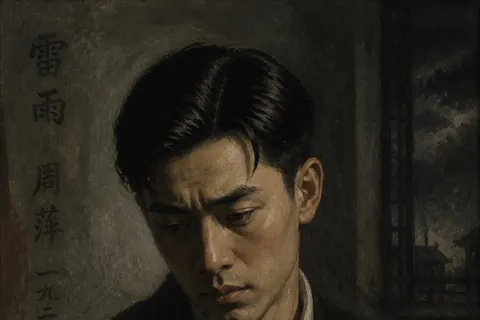
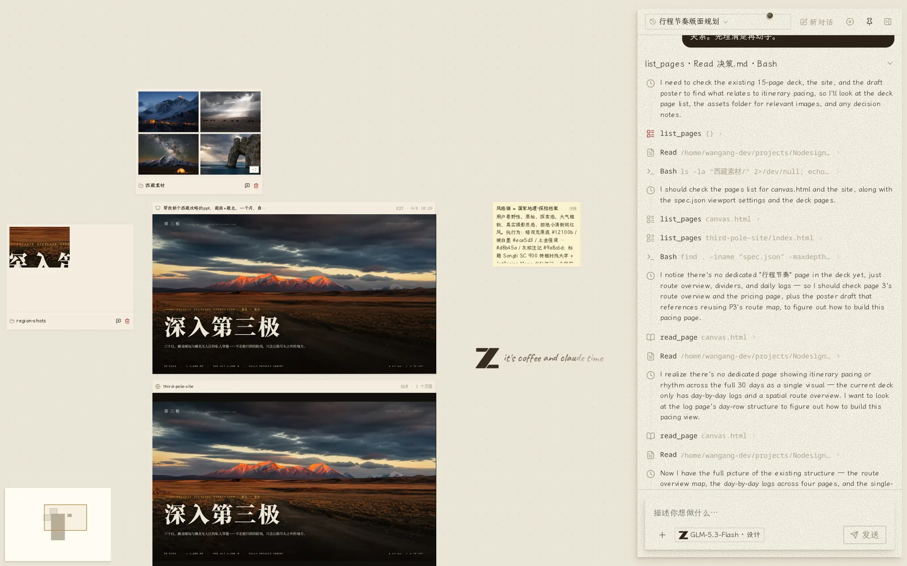
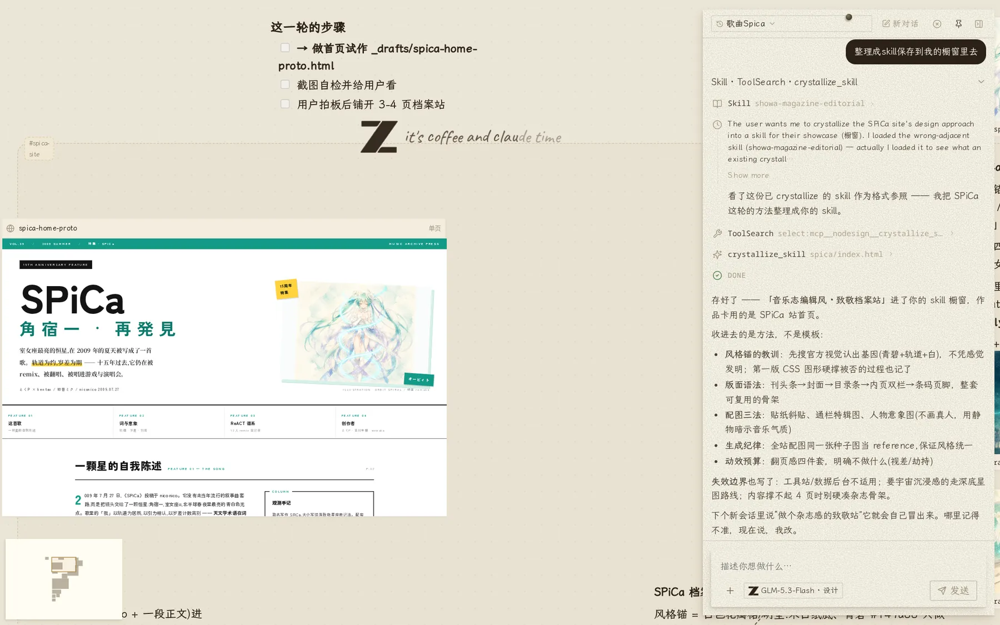

视觉规范
肖像采用 1920 年代油画质感。红色关系线表示隐秘纠葛，灰色关系线表示明面关系。
描述需求，Agent 在画布上完成网页、图像与 Word 文档的制作。在预览上圈选即可修改。产物以标准文件交付，支持下载、继续编辑与发布。


肖像采用 1920 年代油画质感。红色关系线表示隐秘纠葛，灰色关系线表示明面关系。


在西藏攻略项目中输入单页路线总览海报的制作需求。Agent 先确认画幅，再生成草稿、截图检查并输出海报。视频来自真实会话，保留完整工具调用记录。
Nodesign 将需求、制作与修改整合在同一块画布中。Agent 安排步骤、调用工具并生成产物。产物保留在画布上。
修改时可在预览上圈选区域，再输入要求。Agent 生成新版本，并保留旧版本用于回退。
初稿用于确认方向，细节可后续调整。 迭代方式
左侧为传统流程，右侧为 Nodesign 流程。
| 传统流程 | Nodesign | |
|---|---|---|
| 描述需求 | 写文档、画线框，多轮确认 | 直接描述 |
| 出第一版 | 排期、等待设计稿 | Agent 生成初稿 |
| 修改 | 标注、截图、再次沟通 | 圈选并输入要求 |
| 交付 | 打包、导出、传文件 | 一条命令发布 |
Agent 先提供结构，确认后继续制作。
Nodesign 支持多种产物形态。Agent 按对应规范生成内容。
落地页、作品集、多页站点。响应式，可直接发布。
Word 文档支持继续编辑。演示按屏翻页。
支持图像生成、背景移除、海报与短片。移除背景后的主体可用作版面元素。
可交互的角色与原型。状态保留，重新打开还在。
以下站点均使用 Nodesign 制作并发布，可通过公开链接访问。
公开测试中。以下数据截至 2026 年 9 月 9 日，来自代码仓库与生产数据库，不含内部账号。
界面语言：中文。桌面版：Windows 已验证，macOS 尚未验证。移动端：支持查看与对话，编辑建议在桌面完成。
线上版本设有每日额度，适合体验。长期使用建议安装桌面版并配置自有密钥（BYOK），或通过 npx @xiaobuyu/nodesign 本地部署。